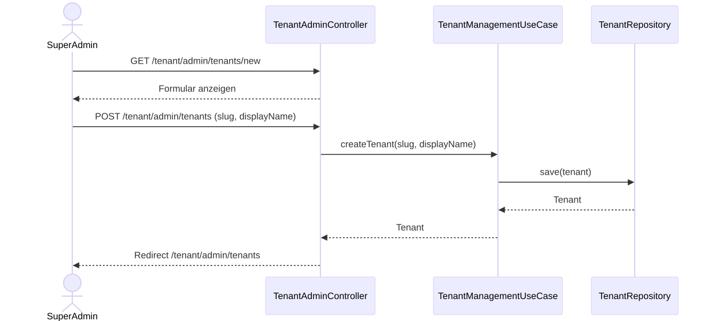

Tenant Management Service: Detail Design
1. Überblick
Der Tenant Management Service verwaltet den Tenant-Lifecycle und die Tenant-Konfiguration als eigenständiger Bounded Context (ADR-0031, SWR-072). Er übernimmt die Verantwortlichkeiten, die bisher im User Management Service als TenantSettings modelliert waren.
Der Service stellt eine Thymeleaf-basierte Admin-UI für SuperAdmins bereit (SWR-073) und eine gRPC-Schnittstelle für Service-zu-Service-Abfragen (SWR-074). Die Architektur folgt der hexagonalen Architektur (SWA-001) mit klarer Trennung von Domain, Application und Adapter Layer (SWA-034).
Der Service besitzt eine eigene PostgreSQL-Datenbank (Database per Service, ADR-0019) und wird mit eigenen Kubernetes-Ressourcen deployt (SWR-075).
2. Domain-Modell
Das Domain-Modell bildet Tenants als Aggregate Root mit Lifecycle-Management, Login-Konfiguration, Branding und rechtlichen Inhalten ab.
Das folgende Klassendiagramm zeigt die Struktur des Domain Layers:

2.1. Tenant (Aggregate Root)
Der Tenant ist das zentrale Aggregate Root des Service (STK-050). Er kapselt alle Konfigurationsdaten, die bisher als TenantSettings im User Management Service verwaltet wurden, und erweitert sie um einen expliziten Lifecycle.
Die Login-Mode-Konfiguration (SWR-044) steuert, ob Benutzer sich über interne Accounts, OIDC oder beides anmelden können. Die Auto-Approval-Regeln (SWR-045) ermöglichen die automatische Freigabe neuer Benutzer basierend auf OIDC-Login oder E-Mail-Domain.
2.2. LoginMode (Enum)
Das LoginMode-Enum wird aus dem User Management Service migriert. Es bestimmt die verfügbaren Authentifizierungsmethoden pro Tenant. Bei Neuanlage eines Tenants wird der LoginMode auf INTERNAL gesetzt (SWR-044). Die Umstellung auf OIDC oder BOTH erfordert die vorherige Konfiguration der OIDC-Felder.
3. Application Layer
Der Application Layer definiert die Inbound- und Outbound-Ports gemäß hexagonaler Architektur.
Das folgende Diagramm zeigt die Ports und den Service:

3.1. Inbound Port: TenantManagementUseCase
Der TenantManagementUseCase definiert alle Operationen zur Tenant-Verwaltung. Die Methode createTenant ermöglicht das Anlegen neuer Tenants durch den SuperAdmin. Die Update-Methoden sind analog zum User Management Service in Einstellungsgruppen aufgeteilt (SWR-069, SWR-070, SWR-071).
4. Adapter Layer
4.1. Inbound: Thymeleaf Web-UI
Die Admin-UI (SWR-073) wird als Thymeleaf-basierte Webanwendung unter /tenant/admin/** bereitgestellt. Sie verwendet die Shared UI Library (SWR-065, SWA-033) für Layout, Footer und CSS.
Das folgende Diagramm zeigt den Ablauf des Tenant-Erstellungsprozesses:

4.1.1. Seiten
| Pfad | Funktion | Rollen |
|---|---|---|
|
Break-Glass-SuperAdmin-Login |
Öffentlich |
|
Tenant-Übersicht mit Status |
SUPERADMIN |
|
Neuen Tenant anlegen |
SUPERADMIN |
|
Tenant-Einstellungen bearbeiten |
SUPERADMIN |
Die Einstellungsseite verwendet Tab-Navigation mit separaten Formularen pro Einstellungsgruppe (allgemein, OIDC, Impressum/Datenschutz), analog zur bestehenden Admin-Settings-UI im User Management Service (SWR-069, SWR-070, SWR-071).
4.2. Inbound: gRPC
Der gRPC-Adapter (SWR-074) stellt Tenant-Informationen für andere Services bereit. Er ersetzt die bisherige TenantSettingsService-Definition in user_management.proto.
Die Proto-Definition wird in eine eigene Datei tenant_management.proto in libs/grpc-contracts/ migriert:
service TenantManagementService {
rpc GetTenantSettings(GetTenantSettingsRequest) returns (TenantSettingsResponse);
rpc ListTenants(ListTenantsRequest) returns (ListTenantsResponse);
}4.3. Inbound: Security
Die Security-Konfiguration umfasst zwei Filter Chains:
| Chain (Order) | Pfadmuster | Verhalten |
|---|---|---|
Admin (Order 1) |
|
Break-Glass-FormLogin, SUPERADMIN-Rolle erforderlich |
Default (Order 2) |
alles andere |
Actuator Health öffentlich, Rest gesperrt |
Redis-Session-Sharing (SWR-064) wird konfiguriert, um Sessions mit den anderen Services zu teilen.
5. Kubernetes-Deployment
Der Service wird mit den folgenden Kubernetes-Ressourcen deployt (SWR-075):
| Ressource | Beschreibung |
|---|---|
Deployment |
2 Replicas, Rolling-Update, SecurityContext (non-root, read-only FS) |
Service |
ClusterIP: Port 80 (HTTP) → 8082, Port 9090 (gRPC) |
Ingress |
|
NetworkPolicy |
Ingress: Traefik (HTTP), Intra-Namespace (gRPC). Egress: DNS, PostgreSQL, Redis |
Linkerd Server |
HTTP/1 (tenant-management-http), HTTP/2 (tenant-management-grpc) |
AuthorizationPolicy |
Traefik → HTTP, blog-content/user-management → gRPC |
Secret |
SOPS-verschlüsselt: admin-password |
ServiceAccount |
Dedizierter ServiceAccount |
Die Manifeste liegen unter infra/k8s/tenant-management/.
6. Anforderungsabdeckung
| Requirement | Beschreibung | Abdeckung |
|---|---|---|
STK-050 |
Eigenständiger Tenant-Verwaltungsservice mit Admin-UI |
Vollständig |
SWR-072 |
Tenant-Management-Service als eigenständiger Microservice |
Vollständig |
SWR-073 |
Tenant-Admin-UI mit Shared UI Library |
Vollständig |
SWR-074 |
Tenant-Management gRPC-Schnittstelle |
Vollständig |
SWR-075 |
Kubernetes-Deployment für Tenant-Management-Service |
Vollständig |
SWA-034 |
Tenant-Management-Service Architektur |
Vollständig |
SWR-044 |
Konfigurierbare Login-Methode pro Tenant |
Migriert aus user-management |
SWR-045 |
Auto-Approval-Regeln |
Migriert aus user-management |
SWR-050 |
Tenant-Branding |
Migriert aus user-management |
SWR-056 |
Audit-Logging |
Via JpaAuditLogger |
SWR-061 |
OIDC-Konfiguration pro Tenant |
Migriert aus user-management |